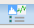

The inter-session plots accessed by the Inter-plots button graph the data for each session together in single-view plots. The individual plots have complex controls, described in detail in “Inter-Plots Window”.
The plots are grouped by the type of data:
Score Plots
The Session Score Components and Session Score plots use only the factors defined in the Gauge Property Spec Editor. To access the editor, click the Edit Layout Spec icon and assign values in the Spec columns. When you are done, click the Update All Plots icon in the dialog box toolbar.
The contribution of the components is weighted in the Score Configuration. To access the settings, click the Config Score icon. The Spec-Delta Adjust and Property Weight fields control the relative weighting used in the property score and session score, whose equations are shown below. (See Figure 1.)
Session Plots
The session plots show the exposure latitude (EL) and depth of focus (DOF) results for all sessions. To remove gauges with bad data from consideration, set their cPW value to Off in the Gauges tab. The settings in the PW Plot are not saved and do not affect the Inter-Plots calculations.
Gauge Plots and Gauge Box Plots
The gauge-based plots show the same data as the session gauge plots, but with all displayed sessions’ gauges shown in a common data area.
The session plots accessed by the Session Plot button let you examine per-gauge metrics for a particular source solution. The number of plots may seem overwhelming but you can reduce the number shown by either of these methods:
Use the Plots pane to turn off the plots you do not care about.
Change your default view by selecting Config Plot ( above the gauge table) and toggling the plots On or Off.
The plots available in the Session Plot Table are as follows, available as both lines and histograms:
CD |
CD Target |
CD DIFF, Absolute CD DIFF |
iDOF, Max iDOF |
Max iEL |
Focus at iDOF, Focus at Max iDOF, Focus at Max iEL |
ILS, ILS‑Left/Bottom (Edge), ILS‑Right/Top (Edge) |
Image Shift |
Nominal EPE, EPE-Left, EPE-Right |
Relative nominal EPE |
MEEF |
NILS |
PV band |
Relative PV band (by percentage) |
Property PW Plots display specified metrics across focus and dose.
The EL vs DOF plot shows how depth of focus (DOF) changes with exposure latitude (EL).
The plot by default displays a thumbnail of the source and the session name. You cannot make changes in the plot once drawn, but you can have any number of plots open at the same time.
See “Comparing Process Window Performance” for instructions on using it.
The Process Window plot is a type of gauge plot, in that it only includes data from gauges of a single session. It is not displayed in the Session Plots window, however.
To create a Process Window plot, the Verify stage must include a DOF check. The results of this are written to output/<check>.sgd, by default output/ldof.ellipse.sgd. (You can also access this from the main window’s window, but you will need to navigate to an .sgd file.)
There are two forms of the Process Window plot. Both can be accessed from the RET Selection GUI by clicking on the filename link in the Result tab.
If Use CWB PW Plot is not selected, the RET Selection Process Window plot is displayed. This plot is described in “Process Window Plot”. This window also provides access to Bossung plots and an EL vs DOF plot.
If Use CWB PW Plot is selected, the Calibre WORKbench Process Window plot is displayed. This plot is described in “Viewing the Process Window Tolerance” in the Calibre WORKbench User’s and Reference Manual.